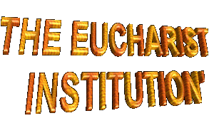

When it arrived the moment of HIS departure to eternity, the immensity of the Divine kindness offered us the best present: The LORD instituted Eucharist’s Sacrament, Real Presence of JESUS with YOUR Body, Blood, Soul and Divinity in the Host and in the Consecrated Wine. Thus, Eucharist’s Sacrament is the bread gone down of the Heaven and in him JESUS is truly present. It is food for the soul, force and inspiration for the humanity in the existential road.
Matthew registered that unforgettable moment of the Institution, writing the words that JESUS spoke:
"While they were eating, JESUS took bread, said the blessing, broke it, and giving it to his disciples said, take and eat; this is My Body. Then HE took a cup, gave thanks, and gave it to them, saying: drink from it, all of you, for this is My Blood of the covenant, which will be shed on behalf of many for the forgiveness of sins".(Matthew 26.26-28)
Mark registered like this:
"While they were eating, HE took bread, said the blessing, broke it, and gave it to them, and said, take it; this is My Body. Then HE took a cup, gave thanks, and gave it to them, and they all drank from it. HE said to them: This is My Blood of the covenant, which will be shed for many".(Mark 14.22-24)
Luke wrote JESUS' following words:
"Then HE took the bread, said the blessing, broke it, and gave it to them, saying: This is My Body, which will be given for you; do this in memory of ME. And likewise the cup after they had eaten, saying: This cup is the New Covenant in My Blood, which will be shed for you". (Luke 22.19-20)
Saint Paul describes like JESUS taught him:
"For I received from the LORD what I also handed on to you, that the LORD JESUS, on the night HE was handed over, took bread, and, after HE had given thanks, broke it and said: This is My Body that is for you. Do this in remembrance of ME. In the same way also the cup, after supper, saying: This cup is the New Covenant in My Blood. Do this, as often as you drink it, in remembrance of ME". (1Corinthians 11.23-25)
The Apostle John that was beside the
MASTER describes the words that HE pronounced in
the Last Dinner:
HE pronounced in
the Last Dinner:
"JESUS said to them: Amen, amen, I say to you, unless you eat the Flesh of the SON OF MAN and drink HIS Blood, you do not have life within you. Whoever eats My Flesh and drinks My Blood has eternal life, and I will raise him on the last day. For My Flesh is true food, and My Blood is true drink. Whoever eats My Flesh and drinks My Blood remains in ME and I in him"(John 6.53-56)
The JESUS' words are authentic and clear. In that “moment of farewell†HE created the mysterious "phenomenon of the Transubstantiation" that happens during the Holy Mass in the instant of the Consecration. The HOLY SPIRIT transforms the bread species and wine in the Body, Blood, Soul and Divinity of CHRIST, maintaining the original aspect of bread species and wine.
This means to say, that JESUS is truly present in the Consecrated Host, in Person and Divinity. Then, the Sacred Communion cannot be considered as a "symbol" or a “representation" of the LORD, because is HIM same who is there. OUR LORD is Really Present in the smallest fraction of a Consecrated Particle, in all Tabernacle of the world always available to satiate the spiritual hunger, to illuminate the souls, to welcome the supplications and prayers of everybody that seek Your assistance. HE helps and inspires the faithful along the existence, protecting and defending the people against the warp of Satan, consoling them in the reverses of the life, giving him forces and courage in order to they persevere in the mission. Full of Mercy, HE comes modestly, in a Particle of wheat and water and in the consecrated wine. In this simplicity HE hides Your Power and Divinity, because primordially HE don’t want that each one of us if approximating OF HIM with ostentation, but with humility, recognizing our own weaknesses and limitations, and like this, prostrated before HIM, well aware of our insignificance and of our nothing, to supplicate the graces we needed for our life.
This reality signals to each person's need to try to increase more and more, in some way, the intensity of the attention and of the affection that dedicate at the LORD. Nothing like deliberated attitude or programmed, but as normal manner, generated of the interior of the heart for the CREATOR'S Heart, a procedure that would be habitually cultivated. This preoccupation’s type represents a permanent prayer to GOD that must to be modulated and adorned with the real prayers that we recited everyday. The prayers will be our love answer, an affectionate tribute of gratefulness, by all the "graces" that HE provides us and by the gift of our own life.

“CORPUS CHRISTIâ€
Since the apostolic time the Church instituted the Commemoration of CHRIST'S BODY, homage of gratitude to JESUS by Your permanent Real presence on our middle. The celebration was on Thursday of the Holy Week, by fact of the Holy Eucharist to have been instituted by JESUS on Thursday, during the Last Dinner in the Cenacle, on Jerusalem, previous day of Your death at Cross. However, as on Holy Week is celebrated the LORD’S Death and Glorious Resurrection with the memory of all JESUS' abominable sufferings, the spirit of sadness dominates totally the liturgy. For that reason, in the continuity of the years, the Church decided to choose another date, for better to homage the LORD and to thank HIM for all the benefits of Your Redemption’s Admirable Work, spilling all days graces in our life. Thus, in the year of 1246, by order of His Sanctity the Urban Pope IV, the celebration of CHRIST'S BODY was inserted on the liturgical calendar and being accomplished on Thursday, after Sunday on the which is celebrated the MOST HOLY TRINITY.
The word “Corpus Christi†is Latin and it means "CHRIST’S BODY", that is the same Sacred Communion, Holy Sacrament, Sacred Species, Holy Eucharist and GOD’S BODY.
Every year, on many cities of the world, the Christians if join and by personal initiative they decorate the streets for where will pass the Procession with the ecclesiastical authority taking the Monstrance (Ostensorium) with JESUS Eucharistic. They are built pretty drawings with flowers’s rugs and other materials artistically used, in a manifestation sincere and spontaneous of love at the Holy Sacrament. In the Belgium, in 1246, when the Celebration began by the Liturgical Calendar, the Christians made the first homage in the streets of Liege’s city, decorating them in an attractive and admirable way, forming immense colors rugs where it passed the Procession with the GOD’S BODY.

HOLY MASS
The Holy Mass or Eucharistic Celebration is where
we receive the Sacred Communion and our prayers for GOD has more reach, greatness
and more intensity. It is the sacrifice of the New Alliance between GOD and the humanity
of all generations, of real way done in Calvary with JESUS' Redeemer Blood. The Sacrifice
celebrated is without spill of blood in all  Holy Masses, but of real and authentic
manner. JESUS the perfect victim, is truly present in Eucharist with Your Body, Blood,
Soul and Divinity, hidden in the appearances of bread and wine, and HE offers HIMSELF
to the ETERNAL FATHER through of the priest's hands Your celebrant minister, as
HE did in the Last Dinner with the Apostles, on Jerusalem, when celebrated the first
Mass and instituted the Eucharist Sacrament. Then Holy Mass is essentially the same
sacrifice of the Cross, only that in the Golgotha went bloody with spill of blood, and in
the Altar it is bloodless, or to say, without CHRIST'S real suffering.
Holy Masses, but of real and authentic
manner. JESUS the perfect victim, is truly present in Eucharist with Your Body, Blood,
Soul and Divinity, hidden in the appearances of bread and wine, and HE offers HIMSELF
to the ETERNAL FATHER through of the priest's hands Your celebrant minister, as
HE did in the Last Dinner with the Apostles, on Jerusalem, when celebrated the first
Mass and instituted the Eucharist Sacrament. Then Holy Mass is essentially the same
sacrifice of the Cross, only that in the Golgotha went bloody with spill of blood, and in
the Altar it is bloodless, or to say, without CHRIST'S real suffering.
By the versicles of the Acts of the Apostles, we can to observe that after the LORD’S resurrection the Apostles they celebrated and the faithful participated daily and with great devotion of Holy Mass:
"They devoted themselves to the teaching of the apostles and to the communal life, to the breaking of the bread and to the prayers". (Acts 2.42)
"Every day they devoted themselves to meeting together in the temple area and to breaking bread in their homes. They ate their meals with exultation and sincerity of heart," (Acts 2.46)
The word “Mass†is of Latin origin (Missa) and it began to be used in the century VI. Previously the Holy Mass was known by other names: Sinaxe, Misterium, Fractio Panis (Fraction of the Bread), Collecta, Oblatio (Oblation), Liturgy, etc. Many of those names was used to denominate the Eucharistic Celebration, today are titles of parts of the Holy Mass.
There are three the fundamental aspects that happen in the celebration of a Holy Mass:
- The Real and True Presence of the LORD.
- OUR LORD'S sacrifice and of the Church (of all your members).
- Our Communion with CHRIST and the brothers.
For that reason the Church teaches, that the
Eucharist, the Holy Mass or the Holy Sacrifice, are the same and single
precious sacrament where the own GOD is Present. It’s the memorial of the Passion,
Death and Glorious Resurrection of JESUS; also is the sacrifice of brother that
participates and receives the LORD in communion, because the Eucharist is
spiritual food for the eternal life of each one.
Sacrifice, are the same and single
precious sacrament where the own GOD is Present. It’s the memorial of the Passion,
Death and Glorious Resurrection of JESUS; also is the sacrifice of brother that
participates and receives the LORD in communion, because the Eucharist is
spiritual food for the eternal life of each one.
We can to say that Holy Mass understands four parts: Initial Ritual, Liturgy of the Word, Eucharistic Liturgy and Final Ritual. In accordance with the names: in Initial Ritual are the Initial Prayers; the readings of the faithful and the celebrant’s homily constitute the space of the Liturgy of the Word; the Eucharistic Liturgy begins in the Offertory and ends after of the faithful Communion. In the Final Ritual is the finish Prayers, the Priest's last words and the Blessing.